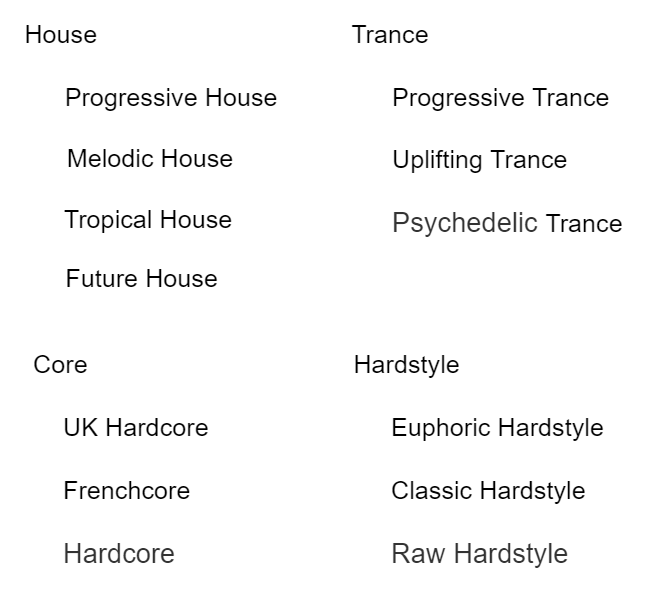
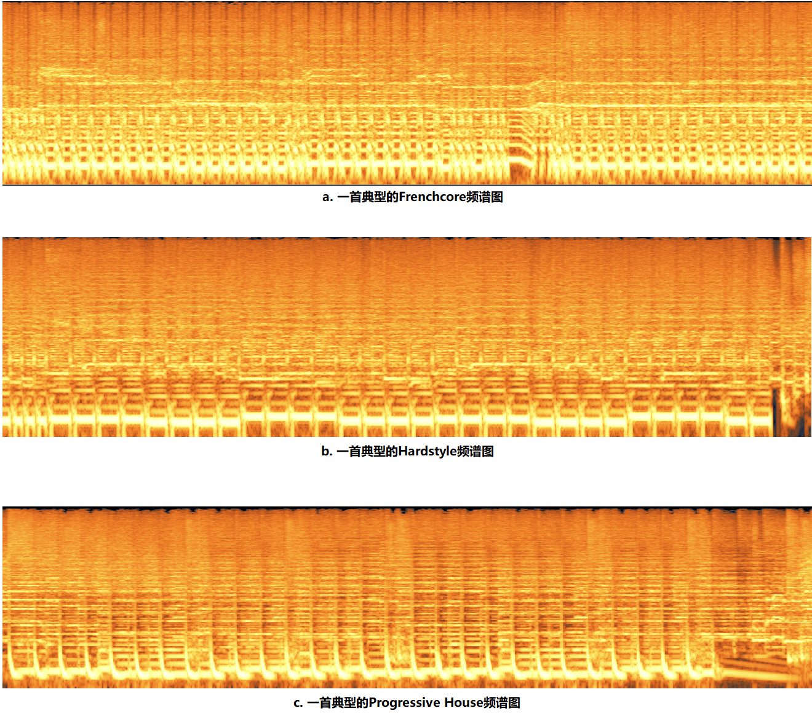
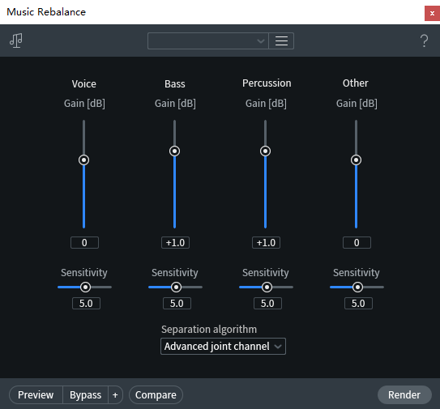

# 一种基于神经网络的电子音乐风格分类算法思路
# —— 以 zjxdiu 常听的电子音乐风格为例
# 目录
一、概述与引言
二、电子音乐风格
2.1 主风格
2.2 子风格
2.3 混合风格与其他元素
三、现有解决方案
3.1 传统人工分类
3.2 特征提取技术
3.3 现有机器学习算法
3.3.1 实践项目：DeepAudioClassification
四、SRM-DNN（频谱、节奏、情感分析 - 深度神经网络）思路
4.1 电子音乐的频谱特征
4.2 鼓与贝斯节奏分析
4.3 BPM 与时间分析
4.4 情感分析
4.5 能量分析
4.6 实现思路
4.6.1 频谱提取
4.6.2 DnB 分析
4.6.3 BPM 与时间分析
4.6.4 图像识别
4.6.5 人声分离
4.6.6 情感特征
五、总结
# 一、概述与引言
随着近年来计算机技术的快速发展，机器学习被应用于越来越多的领域。其中，最广泛的应用之一就是执行分类与识别任务，在音乐风格的识别与分类方面，同样有着应用的空间。为此，结合笔者生活中的实际痛点：难以区分部分电子音乐的风格，且现有方案难以准确识别细分风格，而撰写本文，希望以相对专业的视角提供一种新的解决方案。
# 二、电子音乐风格
电子音乐是音乐中的一个大类型，起源于 20 世纪 60 年代的欧美地区，是音乐文化中重要的一部分。其曲风特色是注重以节奏和旋律创建舞蹈氛围，主要使用各类合成器作为 “乐器”，并具有相对少量的歌词。在约 80 年的发展过程中，电子音乐衍生、拓展出非常多的细分风格，以下对笔者常听的风格进行简述。
# 2.1 主风格
zjxdiu 常听的电子音乐包括以下几类主要风格：
- House，浩室或浩室舞曲，注重旋律和音色的展现，编曲的格式化比较显著，节奏简单且 “软硬” 适中；
- Trance，迷幻舞曲，BPM 相对 House 更高一些，鼓点一般位于每个 1/2 beat 上，但较为柔和；snare 和 hat 也在 DnB 序列中以更高频率出现，每节旋律相似但不重复。整体听感与其名字类似，为 “迷幻”。
- Core，核，主要包括 Hardcore（硬核）和 Frenchcore（法核，也可一并归类为 Hardcore），表现为更为强烈的节奏和鼓点，BPM 也更高，且对人声的处理更极端；部分早期的 Core 十分的 “硬”，以至于很少人能够承受；而近年的新型 core 则相对柔软一些，并且对于旋律和人声的体现也更为注重。
- Hardstyle，硬派，其显著特征为 bass 和 drum 同时出现，且多使用经失真处理的 bassline，由于其独特的 DnB 听感，时常被开玩笑：“听到 duang duang duang 就是 hardstyle”。其软硬程序介于 Core 与 House 之间。
- Hands Up，无中文名，是一种处于 Core 与 Hardstyle 之间、更接近 Core 的风格，其特征为较为快速和低沉的鼓点，且旋律表现力强、与 DnB 的融合程度高，编曲方面则接近 House，在许多 Disco 舞厅音乐中较为常见。
- Chill Out，弛放音乐，它的特征最为显著，即一反常派的柔和与宁静。通常其编曲较为接近 Trance，但使用的音色极为柔软，鼓点和贝斯的响度也很低，BPM 通常也较低，听感上呈现 “飘渺舒缓的节奏，柔和的合成器音效，空灵的女声吟唱，悠远的环境音”。
# 2.2 子风格
常见子风格见如下虚表格：

需要注意的是，此处列出的仅为一部分，实际上还可区分为数倍于列表项目数的子风格。
# 2.3 混合风格与其他元素
对于现代电子音乐而言，一首音乐混合多种风格的做法是十分常见的；例如 Hands Up+Hardstyle、Melodic House+Hardstyle、Progressive House+Future House 等等。不过对于大多数音乐而言，其主要曲风只会有一种。
此外，部分曲风还会有一些其他元素；例如 Midtempo 指 BPM 在约 80~120 之间的，带人声和歌词的 Trance 可称为 Vocal Trance 等。总之，电子音乐的曲风是难以准确、完全判别的，因此可考虑采用标签（label）的方式进行风格判断。
# 三、现有解决方案
# 3.1 传统人工分类
显然，音乐分类可由人工进行；无论是音乐人提供还是听众、鉴赏家提供，都属于人工分类方法。在任何涉及到机器学习与人类学习对比的地方都能得知，人工方法一般有准确率高、复杂任务处理能力强、误报率低、学习速度快且成本低等优点，但其识别速度相比于计算机而言则无法比拟。
# 3.2 特征提取技术
参考文献：基于音乐特征提取和深度神经网络的音乐风格分类算法
对于通常意义上的音乐而言，我们可以通过提取音乐特征进行分析与识别。这些特征包括节奏、旋律、乐器或音色、和弦或和声、人声等内容。通过适当的、已有的算法和模块，可以对这些特征进行单独提取并分析。若加入卷积神经网络，则可获得更为准确的结果。
参考文献中详细介绍了这二者如何融为一体并实际运用，为接下来的算法思路提供了部分理论基础。
# 3.3 现有机器学习算法
传统的基于机器学习的音频分类大多基于常规算法，例如支持向量机、决策树、K - 邻近算法、随机森林算法等等。这些算法的优点是部署和训练简单，算法的数学原理完善，但问题是难以准确处理复杂和细微的变化；尤其是在电子音乐风格分类任务中，由于各风格在许多方面非常相似，传统算法无法很好地处理。
因此，结合使用的技术与特征，提出如下采用神经网络进行识别的识别思路。
# 3.3.1 实践项目：DeepAuddioClassification
在提出自己的算法思路前，笔者首先实践了一个已有的开源项目：Github: despoisj/DeepAudioClassification；该项目采用 tensorflow 中的 tflearn 模块进行 DNN 训练，并且只对音频频谱进行识别，相当于一个只输入频谱图的图像识别算法。
通过将音频频谱提取出来并切片，随后基于 DNN 进行图像分类训练，则模型可用于预测一个未知的音乐频谱图。这种方法巧妙地避开了音频数据量过大的问题，因为一般 CD 音质下 44100Hz 意味着 30 秒的音乐就将产生 66 万个长度的向量。但对于原作者的目的而言，分析大类音乐风格的时候可以直接从频谱入手。根据作者发表的文章 Finding the genre of a song with Deep Learning 的描述，只需要每秒 50 像素的分辨率即可获得满意的效果；在这里，sox 提供了很好用的命令行工具，允许我们直接生成灰度频谱图，其中每个像素的 x 代表时间、y 代表频率、亮度代表振幅。切片后使用深度卷积神经网络进行图像训练，最后使用投票机制提高准确率。
但是，这一次实践的结果并不理想。在学习率 0.001、分辨率 50px/s 时，经过 20 个 epoch 后模型仅能达到 55% 的准确率（ACC），可以看出识别效果并不理想。这主要是因为参与训练的原始数据包括 Trance 和 Hardstyle 两种风格，而它们在梅尔（Mel）频谱图上实际上十分相似，无法准确映射到高维数据集中。
# 四、SRM-DNN（频谱、节奏、情感分析 - 深度神经网络）思路
# 4.1 电子音乐的频谱特征
首先，我们并不希望创建一个需要 A100 才能运行的高度资源密集型网络，而是希望该模型能够在消费级硬件上部署和训练。因此，结合实际电子音乐的主要特征区分，我们可以沿用 DeepAudioClassification 的频谱分析方法。
对于电子音乐曲风分类而言，其频谱图提供的信息量是非常大的，因为几乎每种主类别都有自己特征的 DnB 序列。这导致了在频谱图中的显著区分，在低频区域尤为明显（见下图）。
截取频谱图时采用的配置：
软件：iZotope RX 7
FFT 类型（type）：自动可变短时傅里叶变换（Auto-adjustable STFT）
启用重分配（reassignment）：否
窗函数：海宁窗（Hann）
颜色映射：青色到橙色（Cyan to orange）
频率缩放（Frequency scale）：对数（Log）
高品质渲染（High-quality rendering）：启用

图：三种风格的电子音乐频谱图对比
本图采用的时间窗口：20s
从对比图中可以很明显地看出，不同风格的电子音乐在频谱图中呈现出较为显著的区别；尽管也有相近的风格（如 Hands Up 和 Hardcore），但总体来说，其频谱图能提供主要的风格信息。
既然电子音乐的频谱特征如此明显，为什么 DeepAudioClassification 项目却无法使用呢？
首先，频谱的选型有误，是最大的问题所在。对于电子音乐而言，由于其风格信息大多位于低频区，因此必须使用低频部分缩放较大的谱图类型。上图中采用的缩放是 Log，相比于常用的 Mel 频谱，它对于低频区有更大的缩放等级，使得低频信息分辨率更高；在实际运用中，该软件还提供了 Extend Log（拓展对数）频谱，其低频区的缩放更为显著。
其次，切片数量过多。实践中为尽量减轻硬件负担，对较长的音频进行切片处理；但每个音频切片数为 100 份，这个设定相对于电子音乐的结构而言太多了。常见的电子音乐由几个类型的分段组成，例如 intro、lead、build up、verse、drop、outro 等；其风格的定义一般主要从 drop 中得出，所以若切片过多，则容易破坏每个分段的完整性，不利于风格识别。
# 4.2 鼓与贝斯分析
电子音乐的风格可以说有一半都由 DnB（Drum and bass，鼓与贝斯；这个词同时也是一种类型的电子音乐风格，但本文将其用于指代鼓点 + 贝斯）决定；无论是鼓点节拍数、编排方式还是贝斯的特征，亦或是二者的侧链水平等，均包含大量的风格信息。
有关如何从音频信号中提取节拍信息，目前已有相关研究成果，包括使用动态编程、神经网络等方法进行识别。参考文献：Multi-Feature Beat Tracking
使用 iZotope RX 7 提供的工具也可以进行 DnB 分析，其中的 Music Rebalance 模块可以准确分离人声、贝斯、鼓点三种信号，为分析提供了有利条件。

图：RX 7 中提供的 Music Rebalance 组件
# 4.3 BPM 与时间分析
BPM，即 Beats per minute，每分钟节拍数。它是音乐的一个重要参数，直接指向音乐的 “速度”。尽管在制作电子音乐时，制作人通常不会严格对齐到小节 / 拍的整数倍，但 BPM 依然能够提供风格信息。
在主风格分析时，仅通过 BPM 我们即可首先分辨音乐的大致类别；若低于 90 则可能为 Chill Out，90-110 可能为 House，110-130 可能为 Trance、Hands Up，130-160 可能为 Hardstyle 或 Hardcore 等。
在子风格分析时，BPM 也有助于进行风格确定；例如在 Hardcore 中，若难以分辨 Frenchcore 和 UK Hardcore，则可通过 BPM 辅助判断，若达到了 160 或更高则更可能为 UK Hardcore。
此外，音频的时间长度同样可以作为网络的输入之一，这是因为 Hands Up、Hardcore、House 和 trance、Chill Out 等分别呈现了两种倾向，前者一般时长为 3 分钟左右，而后者最长可达 10 分钟以上。尽管这种参数的帮助十分有限，但其特征强度还会更高，有助于减少结果的偏离。
# 4.4 情感分析
所谓情感分析，指的是对人声（和音乐，如果可能）进行情绪的识别与分类。尽管不是所有音乐都有歌词和人声，电子音乐中的人声更是少见，但进行情感分析依然有助于进一步判别细微的风格差异。
不过，这一步的主要目的其实只针对一种风格的音乐，即 trance；许多 Trance 都具有一些人声，即便没有人声，对于音乐本身的情感分析也能够帮助辨别 Progressive trance 和 Uplifting trance。这是因为大部分 Uplifting trance 都具有一些独特的情感特征：Hopeful，Sentimental，Sad 等等；它们具有一个共同的特征，就是 uplifting，即鼓舞人心的。可以说，如果一首 Trance 听着让人想流泪，则多数时候可以确定它一定是 Uplifting trance。
参考文献：Music Emotion Classification Method Using Improved Deep Belief Network
# 4.5 能量分析
所谓能量分析，是指针对音频每个分片（如每秒）进行电平、响度、频域复杂度等进行分析，从而确定该分片的能量等级。由于电子音乐中每个分段的能量差异较大，intro/outro 最低、lead/build up 中等、drop 最高，因此对整个音频进行能量分析并在二维数组中呈现，将有助于分析音乐结构。
例如，trance 音乐的结构中，各分段能量差异相对较小，drop 出现的频次更多；House 则一般为 intro、lead、build up、drop、verse、build up、verse、outro 序列。不过该方法适用性不佳，主要是因为电子音乐的结构变化性大，且目前没有已标签的数据集进行训练，需要人工标记才能进行监督学习。
# 4.6 实现思路
有了以上理论基础，我们就可以尝试构建这样一个神经网络了。当然，由于笔者的专业是食品安全，本文并不涉及任何实际代码、构建和部署，而仅为提出思路。
# 4.6.1 频谱提取
这个网络仅涉及频域分析而没有时域处理，因此我们可以直接忽略音频原始采样，而是直接生成其频谱图。
前文实践项目 DeepAudioClassification 中，使用到了一个命令行工具：sox。它可以输出音频的 png 频谱图，并且可以直接定义灰度、分辨率等；但其选项中并不能更改频率缩放类型，而默认情况下的 Mel 频谱图对于电子音乐分类而言效果不佳。因此，我们应该使用其他工具或算法来创建 log 频谱图。在 log 频谱图下，一个 44100Hz 采样率的音频（其最高频率为 22050Hz），频谱图的中间位置约为 2205Hz。
# 4.6.2 DnB 分析
网络的第二个输入应该为 DnB 序列；通过前文所述的一些方法，可以获取音乐的节拍序列信息。仅需得知 drum（鼓点）的序列即可提供良好的分类所需的信息，而 bassline 则可通过分析甚低频区的信号得出。
这两个数据在训练时应始终保持时间一致性，即 drum 和 bass 不能独立分析；也可考虑混合后输入，或直接从频谱图中再单独提取高分辨率的低频区信号频谱图像进行输入。
可能实现的模块：Github: MTG/essentia
# 4.6.3 BPM 与时间分析
这一步是相对而言最简单的，音频时间直接获取 duration 即可，BPM 也可以通过许多 python 的音频工具库获得。
可能实现的模块：Github: librosa/Librosa
# 4.6.4 图像识别
这一步有许多可选的方向，不过仍然可以参考前文实践项目的做法，使用 tensorflow 提供的 tflearn 进行图像训练。需要注意的是，为了降低负载，仍然可能需要对频谱图进行分片处理。
# 4.6.5 人声分离
借助许多工具，包括 iZotope RX 7 的 Center Extract、Music Rebalance 或 Audition 的中置声道提取功能，都可以对音频的人声进行高质量分离。这一步的目的是为后续进行情感分析提供原始文件，并且也可能为音乐情感分析提供良好的无人声音轨。
# 4.6.6 情感分析
参考文献：Music Emotion Classification Method Using Improved Deep Belief Network
基于此文献，可以确定 DBN 网络用于情感分析的可能性。不过目前似乎很少见到相关的模块或库可以直接提供此功能接口的，因此在编程方面可能具有难度。
# 5. 总结
再次说明，由于作者为食品专业，且对机器学习、计算机等了解很少，本文中可能出现大量不专业、错误术语和概念，其中的部分思路也可能无法实现或已有更好的替代方法。但作者编写本文的原因是希望解决实际问题，现有的音乐分类不够准确和细致、无法区分电子音乐下的各类风格。
如果您有建议、修改提示、想法等，均可直接于评论区留言。人工智能是新兴的热门话题，在时代的风口浪尖上，我们可以共同学习、不断进步，为计算机学习的城墙添砖加瓦。